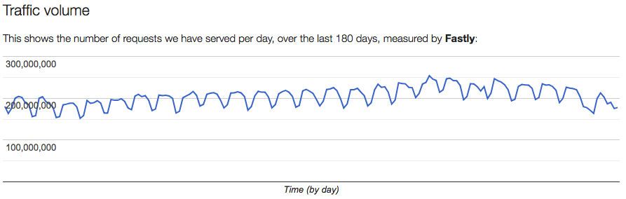
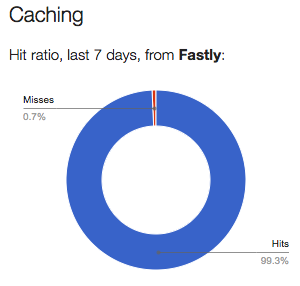

Improving the cache performance of The Polyfill Service
On May 6th 2018 we were able to serve 204 million requests in a single day, serving 99.3% of those from our CDN.
The Polyfill Service is a web service that serves JavaScript polyfills only to the browsers which require them. It’s a service operated by The Financial Times, with Fastly sponsoring the CDN.
As you can see from our usage numbers the service is quite popular, serving hundreds of millions of requests every day. Thankfully, on average, 95.6% of the traffic is served from the Fastly CDN and doesn’t need to go back to our servers.

We’re always looking for ways to improve our cache-hit ratio. Up until recently, our technique is to take the user-agent string from the browser requesting our service and normalise it to something more cacheable by only keeping the name, and the major and minor version of the browser.
We also set a cache-control header of 7 days. This means that when a new version of the service is released, it will take at most 7 days to start serving the new content to all requests.
This article is about the three things we did to improve our cache-hit ratio from 95.6% to 99.3% using some clever stuff in Fastly.
Recently we’ve seen the traffic to the Polyfill Service increase from around 50 million requests per day to around 170 million. With a cache-hit ratio of 95.6%, that meant our traffic to Origin increased to nearly 7.5 million requests.
Marking stale content
Fastly has the ability to mark content in the CDN as stale via an API. Fastly also has the ability to tag content with keys, which you can then use to mark multiple pieces of content as stale.
The only time a response to a previously cached request would be different from before is when a new version of the Polyfill Service has been deployed. Responses don’t change between code releases. This means when we make a release, we can mark all the content as stale as it may have changed. This means the CDN will start serving the new content straight away, rather than having take at most 7 days. This doesn’t help our cache hit ratio but it does improve our service for users
Using surrogate-cache-control
CDNs listen to multiple response headers when deciding how long to store content for. One of these headers is surrogate-cache-control, this is different to cache-control because cache-control is also used to tell browsers how long to store something for whereas, surrogate-cache-control is only listened to by CDNs. Having the ability to tell a CDN to store content for a different amount of time than we tell the browser is a really good idea.
Deployments happen at most once per month. Having the CDN only store content for 7 days is not making the most of the CDN because when the content is marked as stale it probably hasn’t actually changed. Instead we can tell the CDN to store content for a duration of time which is longer than the time between deployments (E.G. 1 year). If we combine this change with the stale marking one from earlier, this means the CDN removes all of it’s content when we deploy a new version of the Polyfill Service and will store the content from the new service until the next deployment occurs or when a year has passed.
Preventing cache busting
The final thing we can do to improve the cacheing is to prevent users from busting past our CDN by only allowing query-string parameters through which are defined in our API. Cache-busting the Polyfill Service does not serve any purpose for users, it only harms the service for everyone.
By combining all of these changes we were able to serve 204 million requests in a single day, serving 99.3% of those requests from our CDN.
